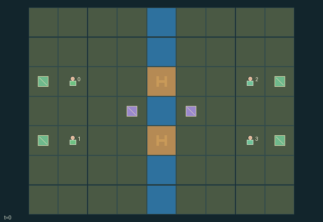

GI165 · Crossing Accord

Coordinate two couriers per team to deliver across the river while controlling, diverting, yielding or blocking routes and contesting energy-saving switch plazas.
Identity and original contract
4 independently actionable roles; 11 discrete commands per role; 68 native observation columns per role; original horizon 96 steps. Declared per-step reward range: -3 to 6. Observation regime: fully_observable.
Source SHA-256: 0244f67cdef89da4cb9d7a95a74283dae30b507653861cf212e14ed28d204f2c
The objective, rewards, population, map and horizon remain original. A preview is not a success claim.
Objective and gameplay
Coordinate two couriers per team to deliver across the river while controlling, diverting, yielding or blocking routes and contesting energy-saving switch plazas.
Crank winners move or reverse actual bridge cells before movement; occupied bridge cells lock their controls. Body occupancy prevents following, swapping and pushing. Plaza control changes future switching cost and periodic team payoffs.
- Agents 0/1 and 2/3 form two opposing controlled teams with individual delivery cells across the river.
- Upper and lower bridges slide between two rows and allow entry only in their current direction.
- An occupied bridge cannot be moved or reversed; its occupant must exit or continue blocking it.
- Agents cannot enter currently occupied cells or swap. Ties for an empty cell use a public rotating priority.
- Adjacent switch operators spend energy; owning the local plaza discounts a crank from two units to one.
- Claim a plaza by applying team pressure, recover energy by waiting on the home bank, or yield by moving aside.
- Two completed cargos win for a team; territory provides a small periodic opposing payoff.
Ending: Either team has delivered both individual cargos. If both finish on the same step the terminal state retains both completion counts; otherwise truncate at 96 steps.
What this game explores
Resource commons & externalities: An action changes a persistent resource or burden that another role also encounters. Compare extraction with maintenance and record the downstream resource trajectory.
Joint transport & shared access: Positions, load geometry, occupancy and persistent access constrain whose action can succeed next. Distinguish physical handoff, shared controls and simultaneous force from a cosmetic cooperation label.
Team opposition & interception: Cooperation within a team can coexist with opposition between teams. Preserve team membership, capture and possession rules, and report each team's outcomes instead of assuming a single shared return.
These are questions supported by rule structure, not observed learning effects.
Play it: operating walkthrough
crucibles play --game gi165Keep Python running and open its printed address. Select this game, set a seed and press Create session. The game itself is always English.
Assign a role range to Host with Assign / take over, or Assign all roles. Invite a second participant with Create player invitation, then assign a disjoint subset. Every original role is available.
For every owned role choose a legal command and press Queue. Arrow keys / WASD queue a declared directional action for the current role camera when available. Space or Advance one joint step advances everyone together. Non-directional games use the selectors.
Unqueued roles use the labelled untrained uniform-legal policy. Take over or release roles before the next step without resetting. Full-state debug is privileged and permanently logged; role cameras preserve permissions. Close the session to retain logs. Server restart does not restore sessions.
Complete command reference
IDs and English labels exactly match the manifest. Availability depends on role, resources, location and phase. An available action can still have no productive effect.
0·wait and recover energy on home bank
1·north
2·east
3·south
4·west
5·shift upper bridge rail
6·shift lower bridge rail
7·reverse upper bridge entry
8·reverse lower bridge entry
9·claim current switch plaza
10·deliver own cargo
Roles and capability identifiers
These original role names describe capabilities, not interchangeable skins. Check each owned role's legal selector before planning handoffs.
agent_0·team-zero upper courier
agent_1·team-zero lower courier
agent_2·team-one upper courier
agent_3·team-one lower courier
Information and observation permissions
Fully public topology and dynamic bridge deck map, positions, energy, territory and delivery state. Own-role one-hot identifies the actor. All four roles remain active after personal delivery so they can help or block until joint termination. No extra information is introduced by the full-state scene.
The GIF is full-state debug and may reveal hidden entities or private state. Train on obs[agent], not the picture, state tree or another role's private row. Field slices and visibility are in the original manifest.
Reinforcement-learning integration
import jax
from crucibles_jaxmarl import make
env = make("gi165")
key = jax.random.PRNGKey(0)
key, rk, ak, sk = jax.random.split(key, 4)
obs, state = jax.jit(env.reset)(rk)
actions = env.sample_actions(ak, state)
obs, state, rewards, dones, info = jax.jit(env.step_env)(sk, state, actions)
done = dones["__all__"]Observations are float32 vectors of width 68; actions are scalar int32; masks have 11 entries. Supply all 4 roles each transition. Masked sampling is an engineering reference, not a trained learner.
step_env retains terminal data without reset. step performs outer autoreset and keeps terminal data in info["raw_state"] and info["raw_observation"]. Use dones["__all__"] for episode boundaries; separate completion, failure and time limit in analysis.
JIT or vmap equal identities and shapes. Split independent reset, policy and transition keys. Group different shapes explicitly; do not shrink the population or horizon. Host rendering stays outside training.
Training questions and fair evaluation
Define valid completion from the objective before fitting. Preserve original rewards and also report real deliveries/services, losses, resource state, unresolved episodes and per-role returns. Animation is not a reward signal.
An action changes a persistent resource or burden that another role also encounters. Compare extraction with maintenance and record the downstream resource trajectory.
Positions, load geometry, occupancy and persistent access constrain whose action can succeed next. Distinguish physical handoff, shared controls and simultaneous force from a cosmetic cooperation label.
Cooperation within a team can coexist with opposition between teams. Preserve team membership, capture and possession rules, and report each team's outcomes instead of assuming a single shared return.
Compare memory, communication or centralized critics under matched actor information. Declare critic access; keep actor inputs role-filtered. Match partner/opponent distributions, masks, compute and checkpoint selection. Final tests never enter fitting or selection.
Independent training runs or source-pairing blocks are inferential units; episodes from one policy are not independent training replications. Save hashes, keys, versions, device, time and cost. Negative, zero, failed and indeterminate outcomes are valid. No trained checkpoint or target score is supplied.
Classification and evidence
Overlapping editorial labels are reading aids, not proof of novelty, difficulty, strategic equivalence or learning effects.
- Resource commons & externalities
- Evidence
manifest.task.objective: Coordinate two couriers per team to deliver across the river while controlling, diverting, yielding or blocking routes and contesting energy-saving switch plazas.
- Joint transport & shared access
- Evidence
manifest.task.objective: Coordinate two couriers per team to deliver across the river while controlling, diverting, yielding or blocking routes and contesting energy-saving switch plazas.
- Evidence
manifest.task.interaction: Crank winners move or reverse actual bridge cells before movement; occupied bridge cells lock their controls. Body occupancy prevents following, swapping and pushing. Plaza control changes future switching cost and periodic team payoffs.
- Evidence
manifest.task.observation_access: Fully public topology and dynamic bridge deck map, positions, energy, territory and delivery state. Own-role one-hot identifies the actor. All four roles remain active after personal delivery so they can help or block until joint termination. No extra information is introduced by the full-state scene.
- Team opposition & interception
- Evidence
manifest.task.objective: Coordinate two couriers per team to deliver across the river while controlling, diverting, yielding or blocking routes and contesting energy-saving switch plazas.
Source, receipts and preview limits
The world-only English GIF replays saved untrained legal actions through the original kernel. At most 25 actual endpoints include initial and terminal state; no invented interpolation. It is full-state debug, not the role observation.
Original source, observation slices, manifest and mechanism
Native receipt · Presentation receipt
Engineering passes do not establish learning. Nonzero floating differences remain recorded and undetermined; no new tolerance was introduced. Human scores remain unverified.